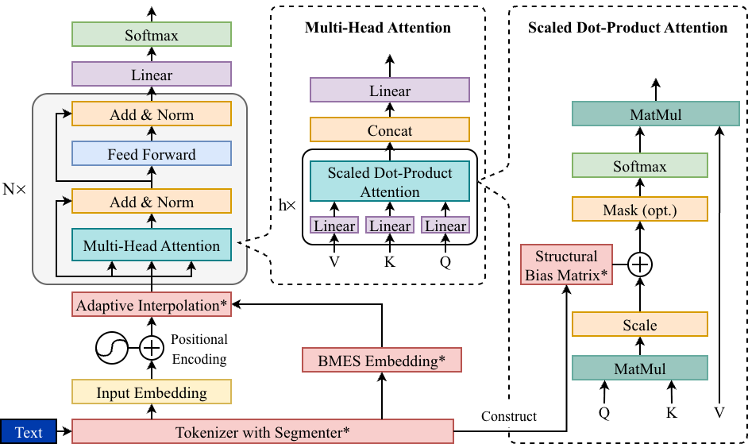
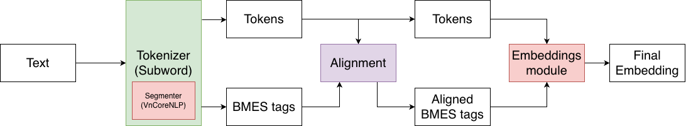
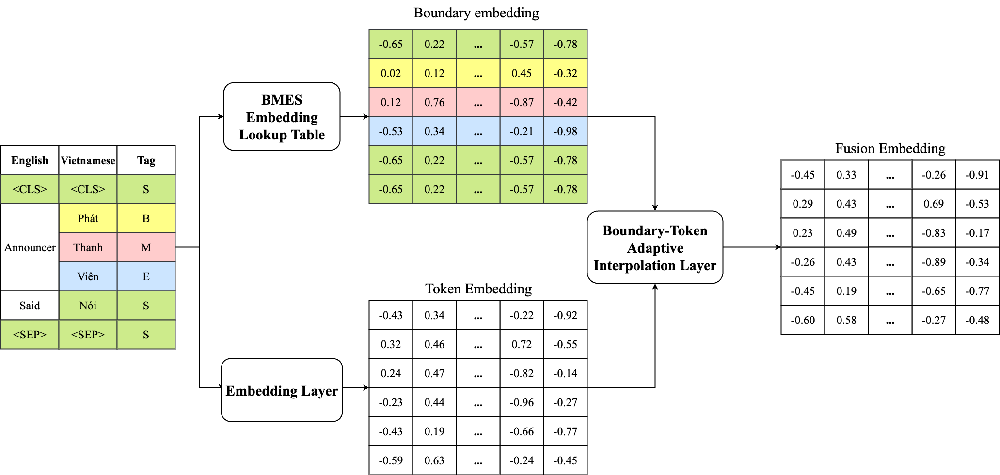
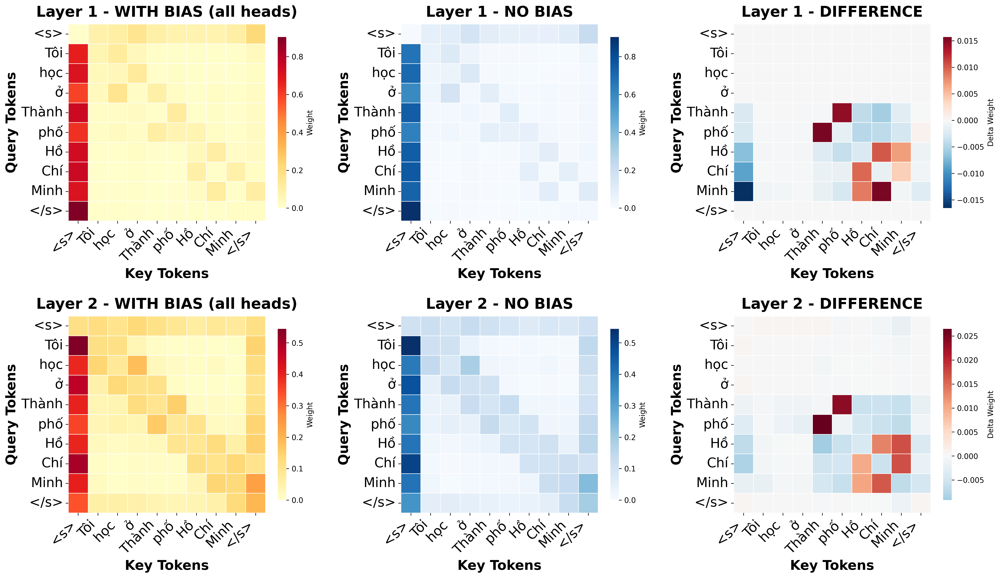

Overview
Explicit morphology for isolating languages.
This repository implements a morpheme-aware Transformer architecture that enhances pretrained encoders with explicit morphological structure for isolating languages.
Integrates BMES-based morpheme boundary embeddings into token representations through a learnable gate.
Injects a fixed structural attention matrix into early self-attention layers while minimally perturbing pretrained attention geometry.
The model effectively captures compound cohesion and morpheme boundaries that standard Transformers often overlook, while remaining optimized for Vietnamese.

The design is portable to other isolating languages like Mandarin Chinese, consistently improving performance on syntactic tasks such as POS tagging and Named Entity Recognition (NER).
Method
Boundary fusion and structural attention.
Adaptive Boundary-Token Fusion
Subword alignment syncs word-structure tags (BMES) with the smaller sub-units of text created during tokenization.
- B (Begin): Marks the first syllable or character of a multi-syllable word.
- M (Middle): Applied to the internal syllables or characters of a multi-syllable word.
- E (End): Marks the final syllable or character of a multi-syllable word.
- S (Single): Used for standalone words that consist of only one syllable or character.
By expanding these tags, the model ensures that multi-syllable words keep their linguistic meaning even when broken into pieces.

Adaptive Interpolation Layer
- Blending Information: Combines standard word data with boundary information that marks where words start and end.
- Smart Filtering: A gate automatically decides how much boundary information is needed for each word based on its context.
- Rich Representation: The result is a more complete representation of the text that respects the natural boundaries of the language.

Morpheme-Aware Attention Bias
This module guides the model's focus by injecting a fixed structural prior into the early self-attention layers. It ensures that the attention mass respects the natural boundaries of compounds rather than spreading too thin across unrelated words.

The bias is controlled by a matrix using four key parameters to modulate relationship scores:
- Alpha (α): Strengthens focus between tokens that belong to the same compound phrase.
- Beta (β): Penalizes or mutes attention between tokens that belong to different compounds.
- Gamma (γ): Highlights and adjusts the importance of single-word units.
- Delta (δ): Controls the strength of a token's focus on itself, or self-attention bias.
By reweighting these connections, the model maintains a stable internal geometry while gaining a clearer understanding of linguistic structure. This method not only work with Vietnamese but also other isolating languages like Mandarin Chinese and Thai.

Experimental Results
Strong gains on Vietnamese syntactic tasks.
We compare HuTieuBERT against widely used pretrained BERT-based encoders, including PhoBERT-base, XLM-RoBERTa-base, and mBERT. Although ViWordFormer is closely related in spirit, it is not included in the main comparison due to substantial architectural and pretraining differences: ViWordFormer is a segmentation-free model trained from scratch, whereas HuTieuBERT augments pretrained encoders.
All reported results are mean ± standard deviation across five independent trials with shuffled training data.
Performance on Vietnamese NLP Tasks.
| Task Type | Dataset | PhoBERT | XLM-RoBERTa | mBERT | HuTieuBERT |
|---|---|---|---|---|---|
| POS (Acc.) | UD_VTB | 0.9188 ± 0.0093 | 0.7480 ± 0.0115 | 0.8010 ± 0.0076 | 0.9567 ± 0.0031 |
| POS (Acc.) | VnDT | 0.9465 ± 0.0006 | 0.7613 ± 0.0041 | 0.9224 ± 0.0036 | 0.9875 ± 0.0006 |
| POS (Acc.) | VLSP_13 | 0.9601 ± 0.0007 | 0.8674 ± 0.0169 | 0.8651 ± 0.0031 | 0.9654 ± 0.0003 |
| NER (F1) | PhoNER | 0.8779 ± 0.0038 | 0.8317 ± 0.0110 | 0.6860 ± 0.0068 | 0.8855 ± 0.0011 |
| NER (F1) | VietMed | 0.5721 ± 0.0111 | 0.6176 ± 0.0021 | 0.4396 ± 0.0163 | 0.5891 ± 0.0089 |
| NER (F1) | VLSP_16 | 0.9145 ± 0.0079 | 0.9188 ± 0.0012 | 0.8049 ± 0.0037 | 0.9235 ± 0.0041 |
| Sent. Ana. (Acc.) | VFSC | 0.8095 ± 0.0294 | 0.7412 ± 0.0167 | 0.6645 ± 0.0589 | 0.8317 ± 0.0134 |
| Topic Clas. (Acc.) | VFSC | 0.7878 ± 0.0066 | 0.7577 ± 0.0245 | 0.7307 ± 0.0161 | 0.8042 ± 0.0076 |
| Cons. Det. (Acc.) | ViCTSD | 0.8211 ± 0.0083 | 0.7989 ± 0.0090 | 0.7755 ± 0.0151 | 0.8141 ± 0.0037 |
| Toxic Det. (Acc.) | ViCTSD | 0.7200 ± 0.0050 | 0.7208 ± 0.0094 | 0.7081 ± 0.0135 | 0.7415 ± 0.0065 |
HuTieuBERT achieves the best POS results across UD_VTB, VnDT, and VLSP_13, and also leads on PhoNER and VLSP_16. On VietMed, XLM-RoBERTa performs best, likely due to the dataset's domain-specific English medical terminology and pronounced class imbalance. For sentence-level classification, HuTieuBERT leads on sentiment, topic classification, and toxic detection, while remaining competitive on constructiveness detection.
Performance on POS (Acc.) and NER (F1). Top 3 rows: POS tagging tasks; Bottom 3 rows: NER tasks.
| Dataset | 1-2 | 5-6 | 9-10 | w_bias_1-2 | w_bmes |
|---|---|---|---|---|---|
| UD_VTB | 0.9567 ± 0.0031 | 0.9538 ± 0.0007 | 0.9507 ± 0.0046 | 0.9461 ± 0.0008 | 0.9530 ± 0.0005 |
| VnDT | 0.9873 ± 0.0006 | 0.9868 ± 0.0009 | 0.9871 ± 0.0003 | 0.9788 ± 0.0109 | 0.9832 ± 0.0055 |
| VLSP_13 | 0.9654 ± 0.0003 | 0.9633 ± 0.0007 | 0.9642 ± 0.0004 | 0.9617 ± 0.0011 | 0.9634 ± 0.0005 |
| PhoNER | 0.8855 ± 0.0011 | 0.8869 ± 0.0017 | 0.8860 ± 0.0014 | 0.8847 ± 0.0043 | 0.8860 ± 0.0014 |
| VietMed | 0.5891 ± 0.0089 | 0.5691 ± 0.0052 | 0.5738 ± 0.0021 | 0.5680 ± 0.0053 | 0.5715 ± 0.0039 |
| VLSP_16 | 0.9235 ± 0.0041 | 0.9144 ± 0.0055 | 0.9158 ± 0.0047 | 0.9129 ± 0.0035 | 0.9176 ± 0.0024 |
Early-layer injection at layers 1-2 generally performs best on POS tasks. Removing either structural attention bias or BMES fusion degrades performance, supporting the contribution of both components.
Transfer to Simplified Chinese: performance on GSDS (POS) and ULNER (NER).
| Dataset | MAChineseBERT | ChineseBERT |
|---|---|---|
| GSDS (Acc.) | 0.8158 ± 0.0002 | 0.8249 ± 0.0006 |
| GSDS (F1) | 0.8316 ± 0.0005 | 0.7816 ± 0.0030 |
| ULNER (F1) | 0.7571 ± 0.0030 | 0.7440 ± 0.0036 |
On ULNER, MAChineseBERT improves F1 over ChineseBERT by 1.31 percentage points. On GSDS, it slightly trails ChineseBERT in accuracy but improves macro-F1 by 5.00 percentage points, suggesting more balanced predictions across POS categories.
Usage
Before running the code.
HuTieuBERT depends on VnCoreNLP for Vietnamese word segmentation. Before running any tokenizer or model example in this repository, please download and set up VnCoreNLP following the official repository: vncorenlp/VnCoreNLP.
Recommended setup
pip install py_vncorenlpimport py_vncorenlp
py_vncorenlp.download_model(save_dir="/absolute/path/to/vncorenlp")Notes
- Java 1.8 or newer is required by VnCoreNLP.
- Set
vncorenlp_dirto the same directory you used indownload_model(...).
Example Usage
import torch
import torch.nn as nn
from transformers.models.roberta.modeling_roberta import RobertaModel, RobertaEncoder, RobertaLayer
from transformers import RobertaConfig
from model.tokenizer import MorphemeAwareTokenizer
from model.embeddings import BoundaryAwareEmbeddings
from model.model import MorphemeAwareRobertaModel, MorphemeAwareRobertaForSequenceClassification
tokenizer = MorphemeAwareTokenizer.from_pretrained(
"ducanhdinh/HuTieuBert",
vncorenlp_dir="/content/vncorenlp",
return_tensors="pt"
)
config = RobertaConfig.from_pretrained("ducanhdinh/HuTieuBert")
# Applied Structural Bias Matrix to Layer 1 and 2 full 12 heads
target_heads = {
1: list(range(config.num_attention_heads)),
2: list(range(config.num_attention_heads)),
}
model = MorphemeAwareRobertaForSequenceClassification(
config,
num_labels=label_num,
target_heads=target_heads,
alpha=0.5,
beta=-0.3,
gamma=0.0,
delta=0.0,
)
model.roberta = MorphemeAwareRobertaModel.from_pretrained(
"ducanhdinh/HuTieuBert",
target_heads=target_heads,
alpha=0.5,
beta=-0.3,
gamma=0.0,
delta=0.0,
)
device = torch.device("cuda" if torch.cuda.is_available() else "cpu")
model.to(device)Citation
Paper and BibTeX.
If you find this work useful, please consider citing our paper:
@inproceedings{dinh-etal-2026-morphology,
title = "When Morphology Hides in Plain Sight: Breaking the Isolation in {V}ietnamese and Beyond",
author = "Dinh, Anh Trac Duc and
Vo, Khang Hoang Nhat and
Ta, Tai Tien and
Doan, Vinh Cong and
Quan, Tho",
editor = "Liakata, Maria and
Moreira, Viviane P. and
Zhang, Jiajun and
Jurgens, David",
booktitle = "Proceedings of the 64th Annual Meeting of the {A}ssociation for {C}omputational {L}inguistics (Volume 1: Long Papers)",
month = jul,
year = "2026",
address = "San Diego, California, United States",
publisher = "Association for Computational Linguistics",
url = "https://aclanthology.org/2026.acl-long.472/",
pages = "10377--10392",
ISBN = "979-8-89176-390-6",
abstract = "In isolating languages such as Vietnamese, core morphological structure is encoded not by inflection but by the composition and ordering of monosyllabic morphemes, yet standard Transformer encoders largely overlook this signal. We introduce HuTieuBERT, a morpheme-aware Transformer that augments a pretrained Vietnamese encoder with two lightweight inductive biases: (i) Adaptive Boundary-Token Fusion, which integrates BMES-based morpheme boundary embeddings into token representations via a learnable gate, and (ii) a Morpheme-Aware Attention Bias, which injects a fixed structural attention matrix into early self-attention layers while minimally perturbing the pretrained attention geometry. Across a suite of Vietnamese POS, NER, and sentence-level classification benchmarks, HuTieuBERT consistently outperforms strong baselines, with the largest gains on syntactic tasks. Hyperparameter ablations show a broad regime in which structural biases improve accuracy without destabilizing representations. Applying the same design to ChineseBERT (Chinese-BERT-wwm) yields MAChineseBERT, which improves $F_{1}$ and produces more balanced tag distributions on Chinese POS and NER, suggesting that explicit morpheme-aware attention is a portable and effective strategy for modeling isolating languages."
}Acknowledgement
Use of external segmentation.
This work makes use of VnCoreNLP - a Vietnamese natural language processing toolkit.
Copyright (C) 2018-2019 VnCoreNLP
This program is free software: you can redistribute it and/or modify it under the terms of the GNU General Public License as published by the Free Software Foundation, either version 3 of the License, or (at your option) any later version.
This program is distributed in the hope that it will be useful, but WITHOUT ANY WARRANTY; without even the implied warranty of MERCHANTABILITY or FITNESS FOR A PARTICULAR PURPOSE. See the GNU General Public License for more details.
Repository: https://github.com/vncorenlp/VnCoreNLP